Tech 21 SansAmp Bass Driver DI V2 解析
2022年05月03日 カテゴリー：修理・改造・解析
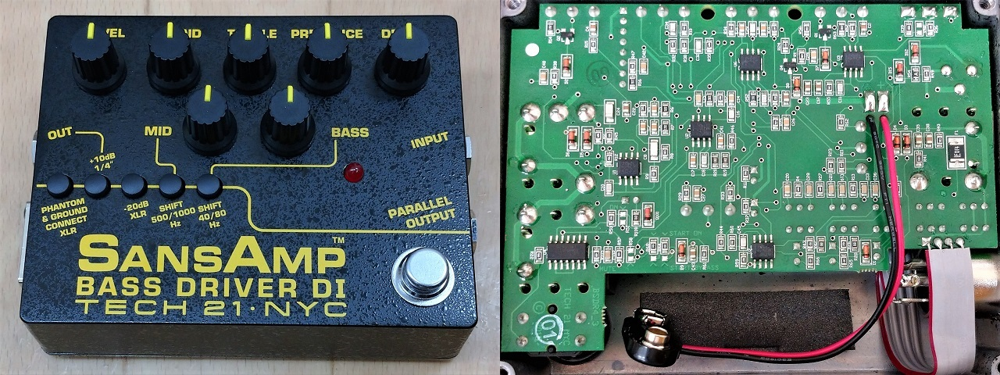
Tech 21 SansAmp Bass Driver DI（以下BDDI） V1初期型とV1後期型に引き続き、V2ではどのように変わったのか解析していくことにしました。上写真は2022年1月に購入した個体です。V2販売開始から間もない2016年頃は、V1後期型と同じ高さが低くないフットスイッチだったようです。
＜モールドとの闘い＞
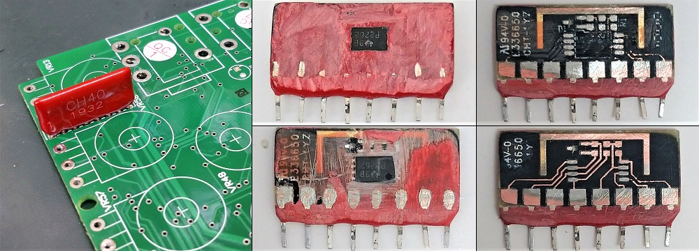
V1後期型と同じように謎モジュールが使用されており、「CH40」と印字してあります。モールドは固く、燃料用アルコール（メタノール）に浸けてもほとんど変化がありません。周辺回路や各ピン間の抵抗値から、中の回路はV1後期型のものと似ていると予測できました。地道に削っていきましたが、小さなモジュールなのでそれほど時間はかかりませんでした。基板はセラミックではなく普通の素材で、チップ抵抗やシルク印刷が確認できました。
慎重に削ったつもりでしたが、クリッピングダイオードと思われる部品のマーキングはわかりませんでした。測定してみると、やはり3.3Vのツェナーダイオードが向かい合わせになった部品でした。パッケージはSOT-663で、該当するツェナーダイオードは「BZB984-C3V3」だけしかなく、これを使い謎モジュールのクローンを製作しました。
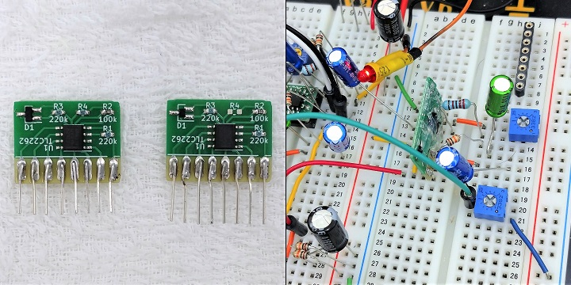
ブレッドボード上で周辺回路を組み、元のモジュールと特性が一致することを確認しました。写真左側はついでに作ったV1後期型用のモジュールです。
＜基板画像・回路図＞（KiCadデータ・高解像度画像はGitHubへ）
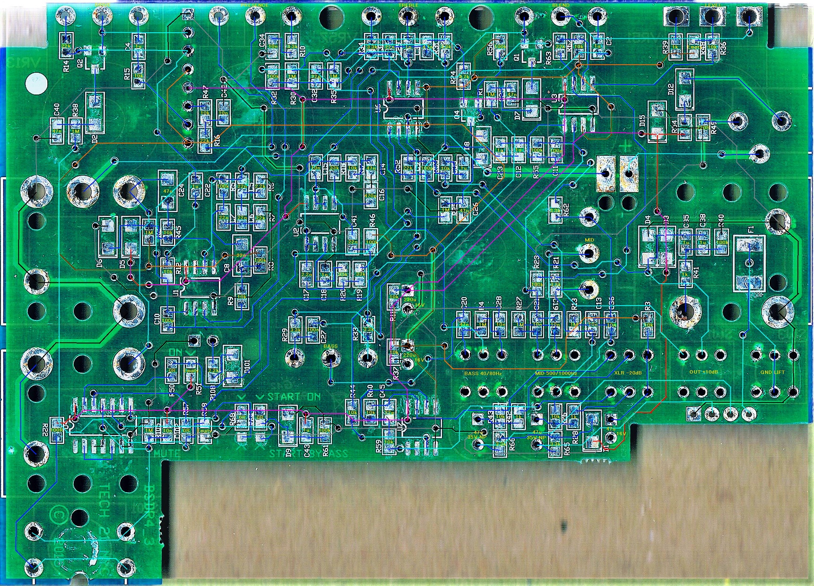
ほとんどの表面実装部品が2.0mm×1.2mmサイズになっており、部品番号がシルク印刷されています。クワッドオペアンプの方がローコストに済むはずですが、なぜか全てデュアルオペアンプです。プッシュスイッチはTONELUCK LTVという印字がありました。
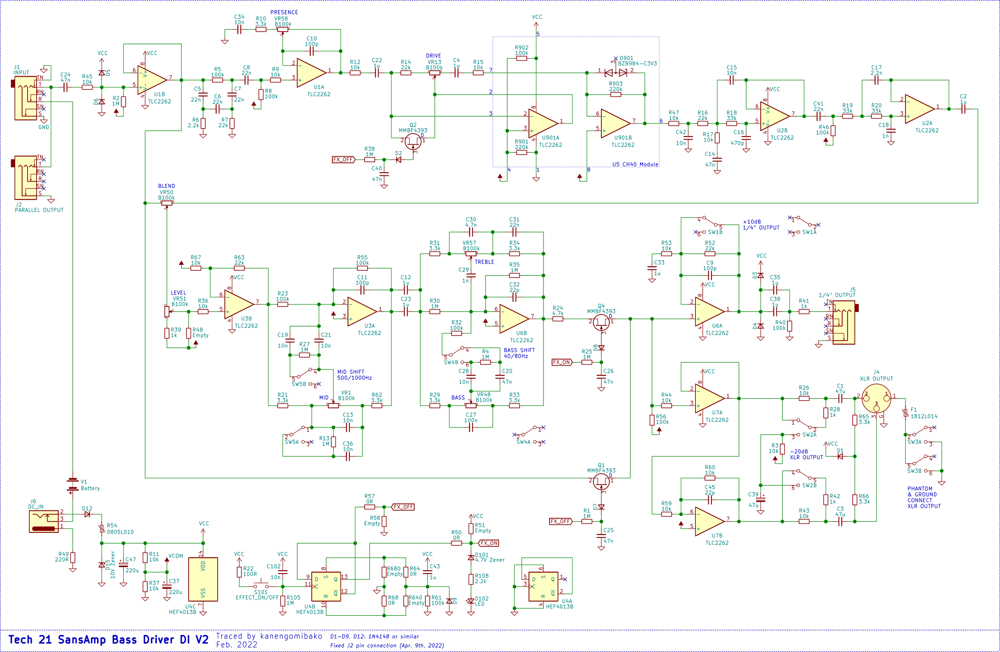
V1後期型（回路図：
- チューブアンプエミュレーション回路
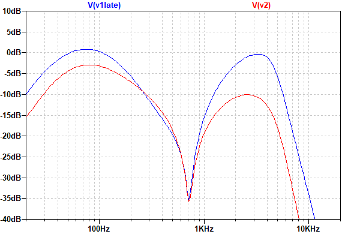
PRESENCE 0% DRIVE 0% BLEND 100% でのシミュレーションです。V1後期型より低音域・高音域共に下がっています。特にR47とC42によるローパスフィルタの影響（高音域低下）が大きいです。また、V1初期・後期型では下図のミッドカット回路で430Hzあたりが削られていましたが、それがなくなっています。これは別途ミッドコントロールが追加されたされたための措置だと思われます。
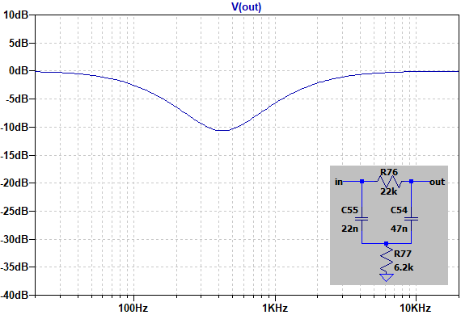
- MID
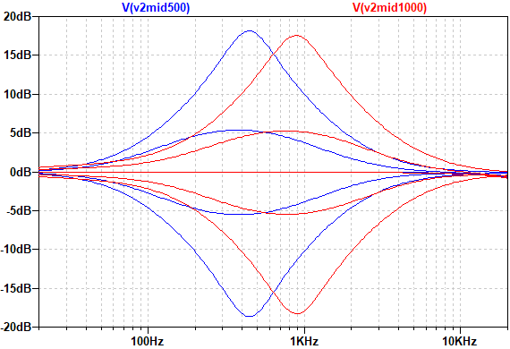
「SHIFT 500/1000Hz」という記載ですが、実際は400～450Hzと800～900Hz付近です。こいち時間でサンプルセッティングが比較されている通り、少しミッドカットするとV1後期型に近づくということになります。厳密にいうと、V1初期・後期型ではチューブアンプエミュレーション回路側のみミッドカットされていたのが、V2では原音がブレンドされた状態でミッドコントロールされるため、効き方が異なっています。メーカーとしてはBLENDは100%が基本という考えのようなので、問題ないということでしょう。サンプルセッティング比較をさらによく見ると、V2ではTREBLEを少し上げてあります。先の解析の通り、V2では高音域が下がっていることを考慮してのことだと思われます。
- PRESENCE DRIVE
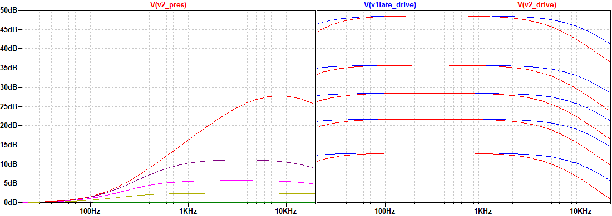
増幅部分のみのシミュレーションです。PRESENCEはV1後期型と同じです。DRIVEは、カップリングコンデンサの容量変更の影響で低音域が少し下がっているのと、クリッピング用ツェナーダイオードの端子間容量の違いで高音域が下がっています。
ツェナーダイオードによるクリッピングは今まで試したことがなかったのですが、端子間容量が結構大きめだとわかりました。パッケージ、メーカーやロットでもバラつきが大きそうなので、他の歪みエフェクターに応用する場合には注意が必要だと思います。
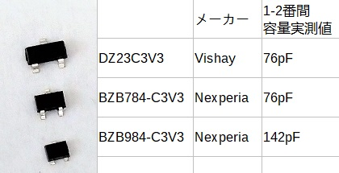
- BASS TREBLE
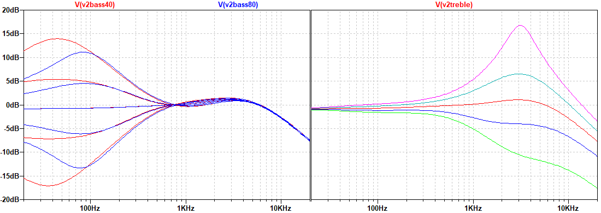
BASS 80Hz時とTREBLEはV1後期型と同じです。BASS 40Hz時では増減幅が大きくなります。
- 電源部
こいち時間掲載の個体では、電源部のR54が黒焦げになっています。リセッタブルヒューズが使われていたら、このような焦げ方にはならないでしょうし、部品番号は「F」となるはずです。なのでR54は、最初は抵抗器が実装されていて、後からリセッタブルヒューズに変更になったと考えられます。故障のクレームか修理案件が多かったのかもしれません。
- スイッチ周辺回路
V1初期・後期型ではHEF4013Bの2回路が使ってありましたが、V2では1回路のみとなりました。基板上の「START ON」「START BYPASS」という表示は、電源投入時にエフェクトオンにするかバイパスにするかの選択用です。DRIVE部分にはFETスイッチがあり、バイパス時にゲインが下がるようになっていて、エフェクト音が漏れるのを防いでいます。（一応V1後期型での音漏れがどうなのか調べてみましたが、3.5kHzで-80dB、10kHzで-60dB程度だったので、特に問題ないレベルだと思います。）
＜解析を終えて＞
ベーシストにとって最も有名なペダルの一つであるBDDIの回路図が出回っていなかったのは不思議だったわけですが、ようやく解析を終えることができてスッキリしました。部品や回路等の変更過程には、おおらかさというか、アメリカンというか、そんな感じの考え方がある気がして面白かったです。結局のところ、V2は使いやすくなりつつもサンズアンプらしさがあるという完成形といってよいと思います。今後も末永く愛され続けて欲しいです。